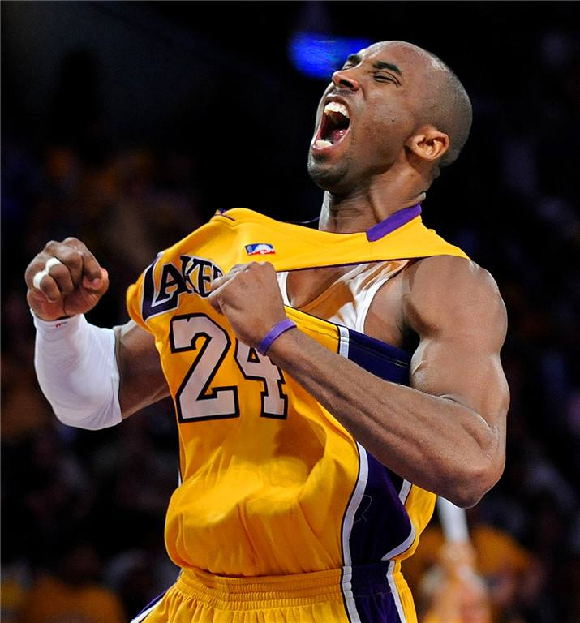

Forever number 24
为湖人付出全部的青春
科比全部的职业生涯时光都献给了湖人，尽管也遇到了挫折和伤病，但传奇的职业生涯和无数的辉煌都见证了这个王者的所有岁月。
职业生涯总共 39138分
常规赛共33498分
季后赛共 5640分
2016年4月14日的告别赛，科比上场42分钟，50投22中疯狂砍下60分4篮板4助攻！60分是本赛季个人单场比赛最高得分，也是科比职业生涯第5高得分。同时，37岁235天的科比也成为了历史上
拿到60分球员里年龄最大的一位。
七项荣誉大满贯
NBA总冠军 得分王
最佳阵容 最佳防守阵容
常规赛MVP 总决赛MVP 全明星MVP

个人荣誉
奥运会冠军：2次
NBA冠军：5次
NBA得分王：2次
NBA西部冠军：7次
NBA总决赛MVP：2次
NBA常规赛MVP：1次
NBA全明星赛MVP：4次
NBA全明星：18次
最佳阵容第一阵容：11次
本网站的作者有：
陈林强 20200210260314 软工3班
曾磊 20200210260426 软工4班
吕国威 20200210260432 软工4班